Introduction: Key Terms & Themes
Human Health & the Environment
Misinformation & Disinformation
Misinformation
False information shared without the intention to mislead.
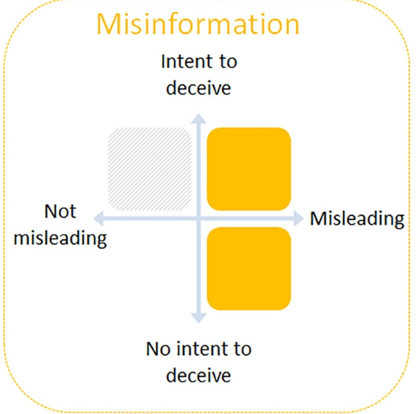
Disinformation
False information deliberately created and spread to deceive or cause harm.
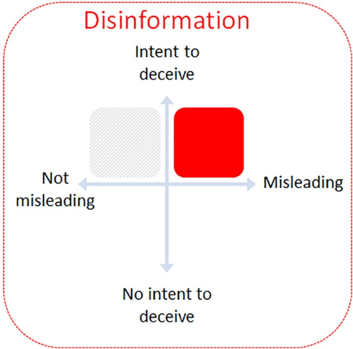
Malinformation
Genuine information used out of context to cause harm.
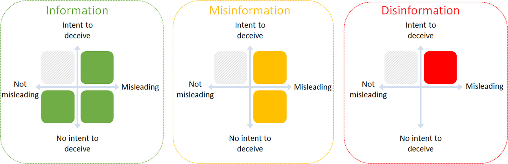
Malinformation
Genuine information used out of context to cause harm.
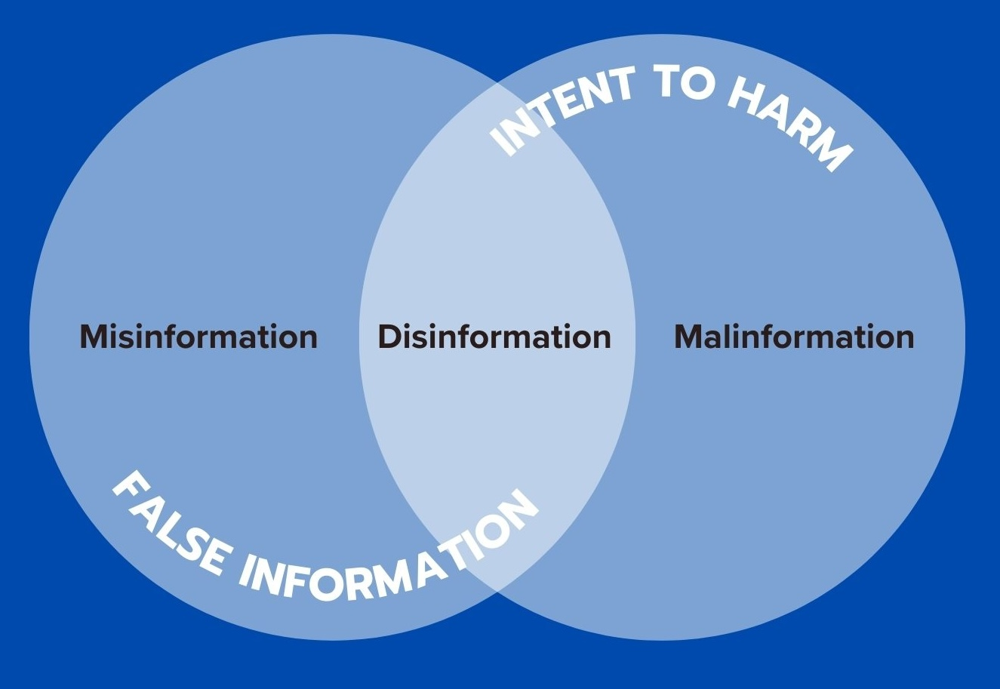
Green Washing
Misinformation, Disinformation, or Malinformation?
. . .
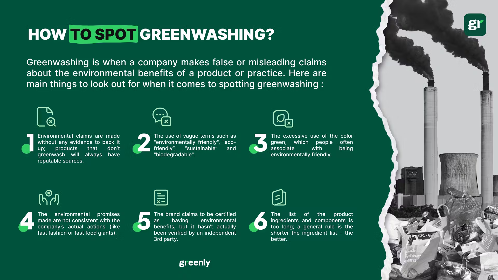
Green Washing
Examples?
. . .
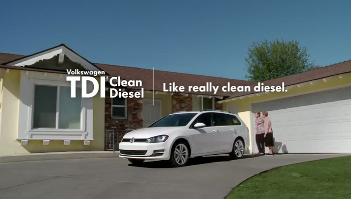
- Dieselgate refers to the 2015 Volkswagen emissions scandal
- Volkswagon used a software trick to circumvent EPA emissions testing
- The automaker’s so-called clean diesel cars actually produced nitrogen oxide emissions up to 40 times the legal limit.
- The scandal involved approximately 11 million vehicles globally and led to massive fines, settlements, vehicle buybacks, recalls, criminal charges against executives, and a significant drop in Volkswagen’s reputation and sales.
Green Washing
- Dieselgate refers to the 2015 Volkswagen emissions scandal
- Volkswagon used a software trick to circumvent EPA emissions testing
- The automaker’s so-called clean diesel cars actually produced nitrogen oxide emissions up to 40 times the legal limit.
- The scandal involved approximately 11 million vehicles globally and led to massive fines, settlements, vehicle buybacks, recalls, criminal charges against executives, and a significant drop in Volkswagen’s reputation and sales.
One Health
Definition
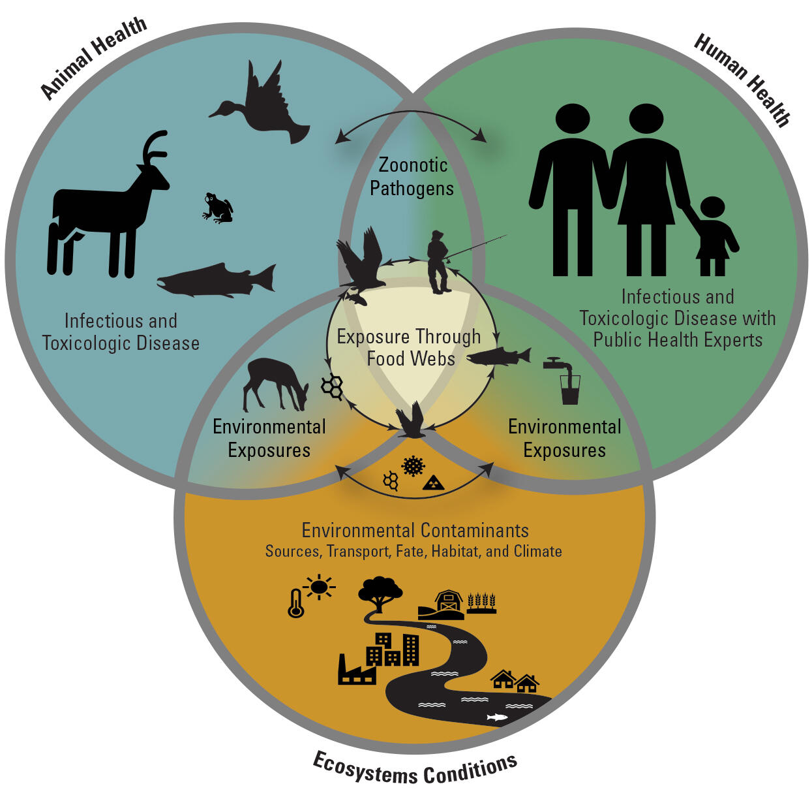
The health of humans, domestic and wild animals, plants, and the wider environment (including ecosystems) are closely linked and inter-dependent.
One Health aims to sustainably balance and optimize the health of people, animals and ecosystems.
Scope
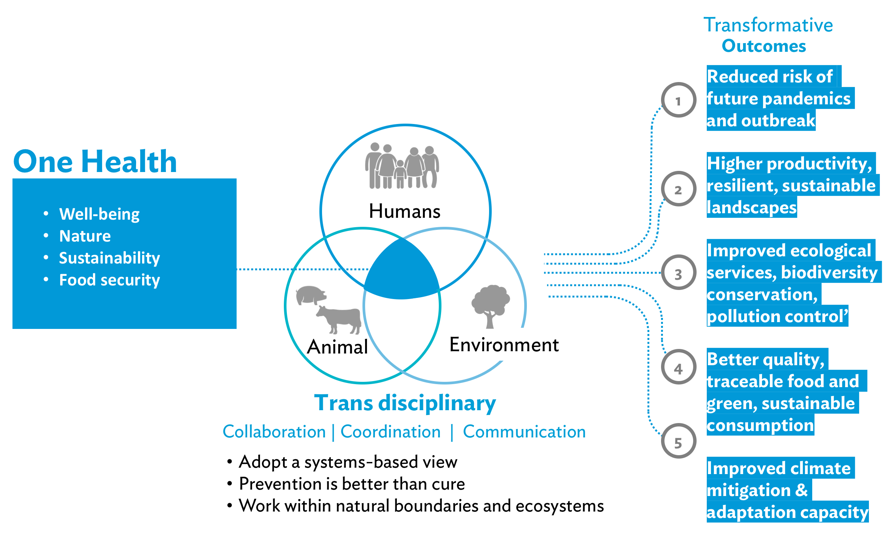
The approach mobilizes multiple sectors, disciplines and communities at varying levels of society.
Goals
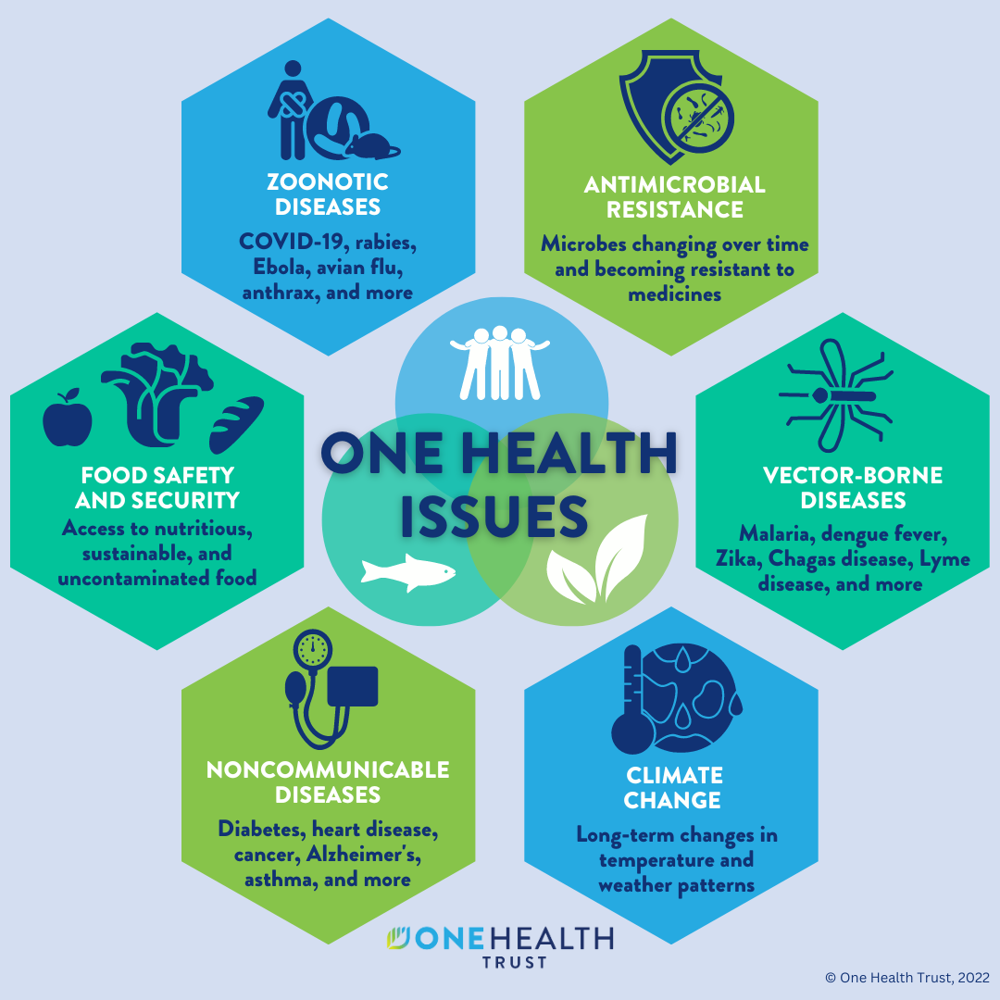
- Tackle threats to health and ecosystems
- Address the collective need for clean water, energy and air, safe and nutritious food
- Take action on climate changes and contributing to sustainable development.
Environmental Justice
Environmental Justice Defined
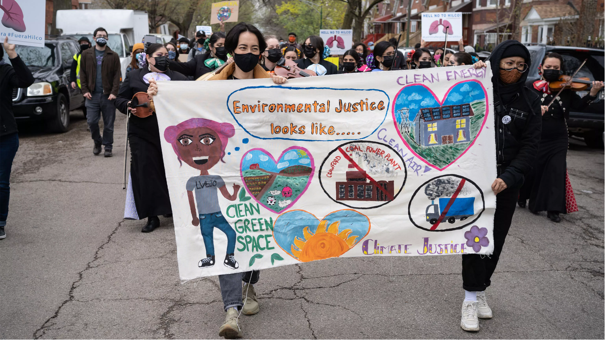
The just treatment and meaningful involvement of all people in environmental decision-making to ensure full protection from disproportionate environmental and health impacts, and equitable access to a healthy, sustainable, and resilient environment.
– U.S. Environmental Protection Agency (EPA) (2024)
Justice & Equity
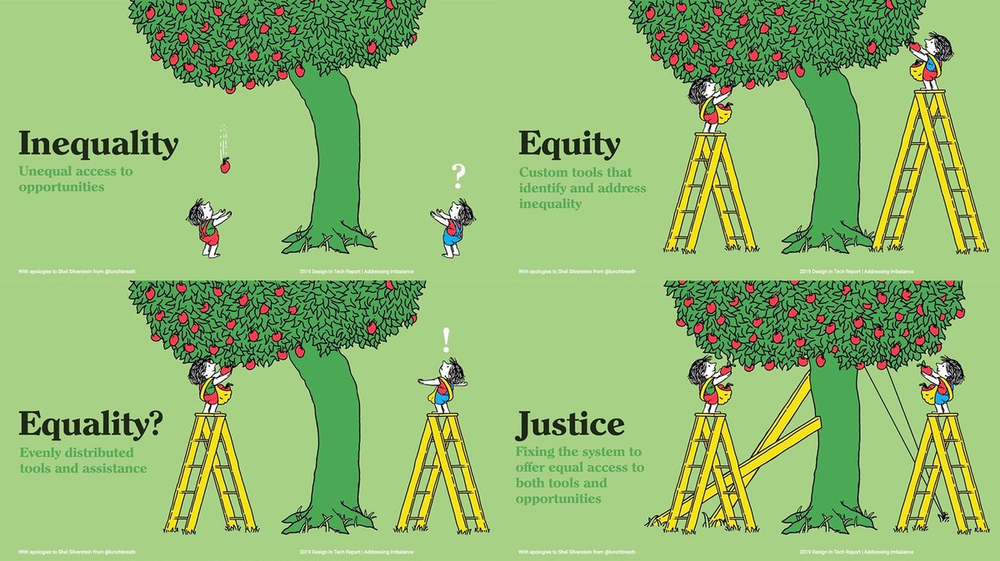
Everyone is a product of diverse biological and cultural histories, existing in a system that disproportionately benefits those most recently in power.
Environmental Justice
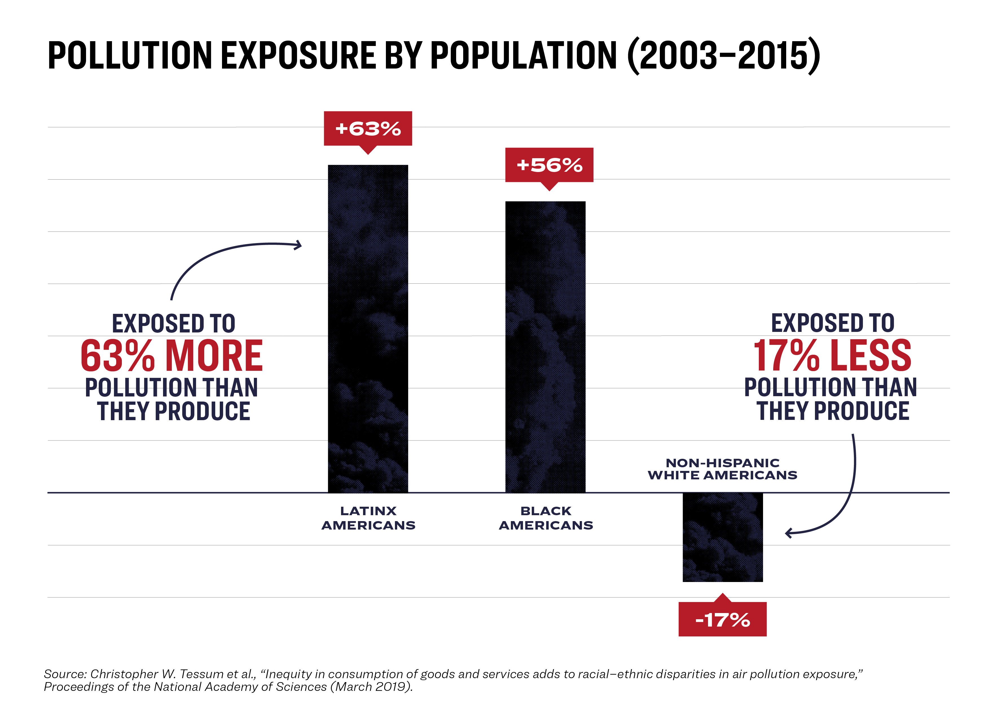
A landmark 2007 study found “race to be more important than socioeconomic status in predicting the location of the nation’s commercial hazardous waste facilities”.
https://www.nrdc.org/sites/default/files/toxic-wastes-and-race-at-twenty-1987-2007.pdf
Environmental Justice
- Black children were 5x more likely to have lead poisoning than white children were.
- Even black Americans making 50-60K/year were more likely to live in polluted areas than their white counterparts making only 10K/year
In the UK meanwhile, a government report found that black British children are exposed to up to 30% more air pollution than white children.
Environmental Justice
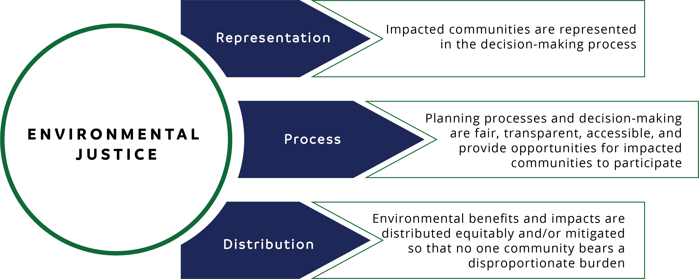
The term “environmental justice” initially referred to the movement that arose to confront environmental racism, but it has since expanded to encompass multiple forms of environmental inequities and problems.